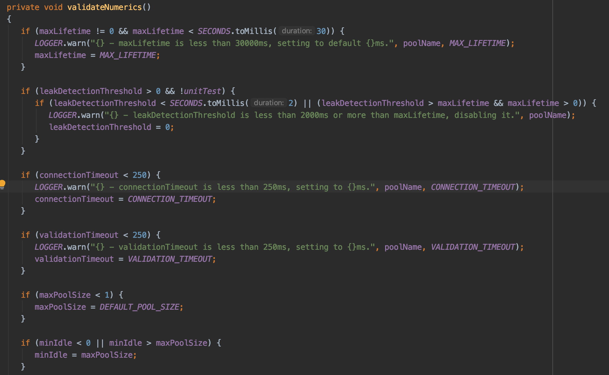
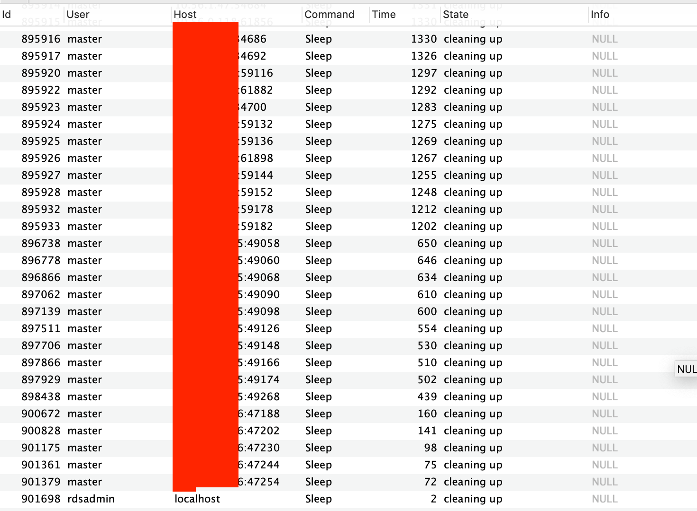
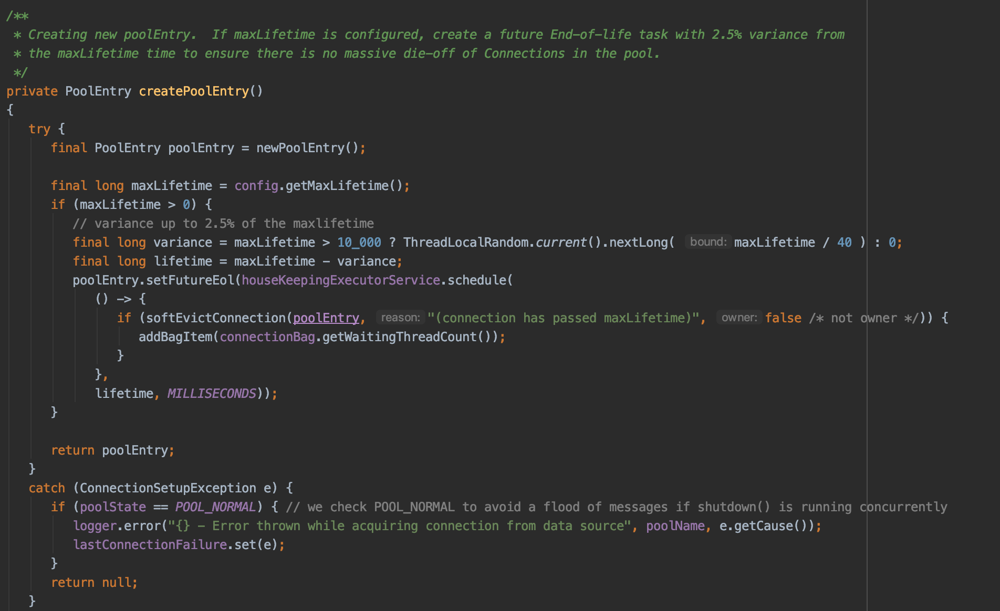
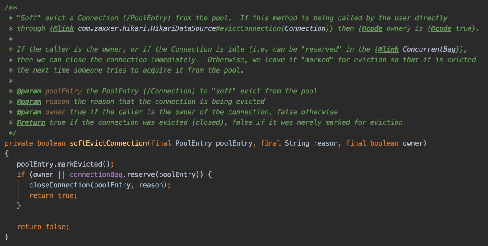
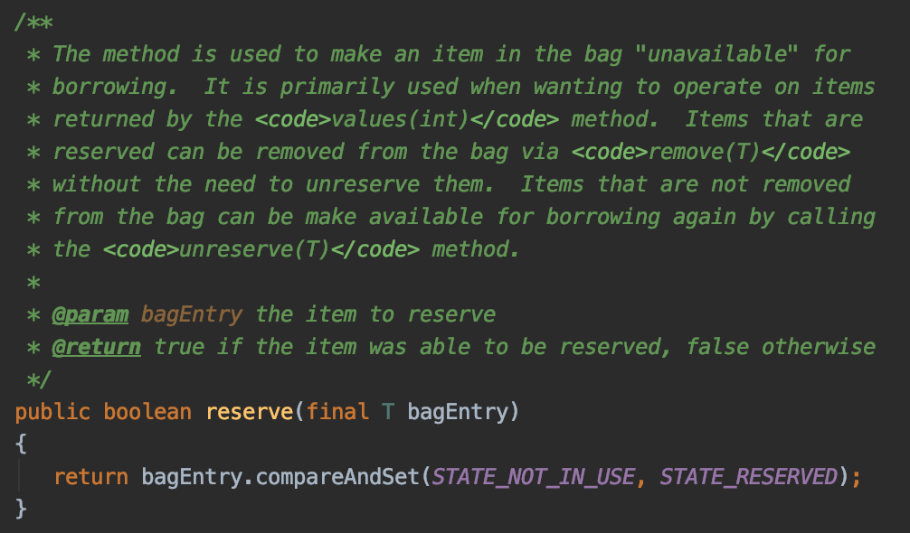
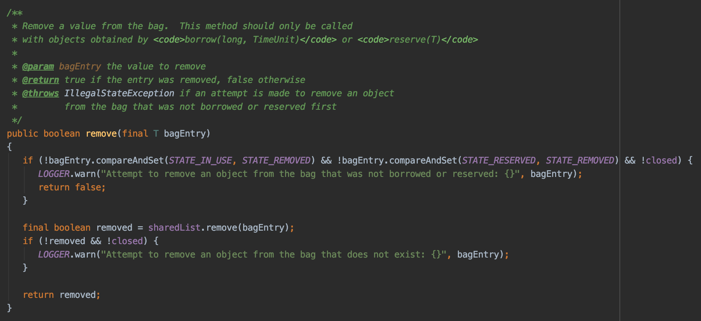
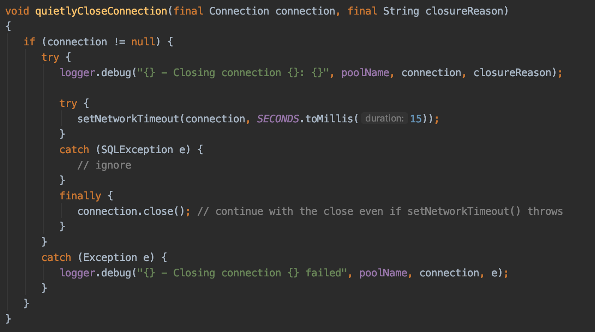
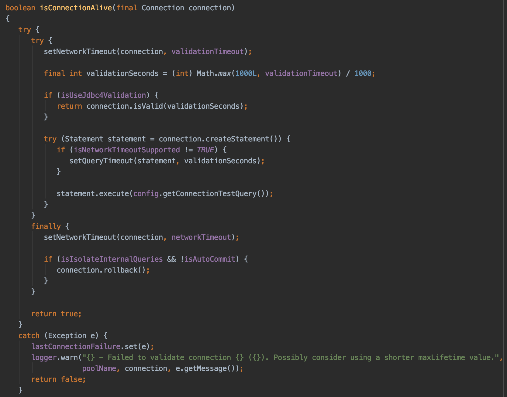
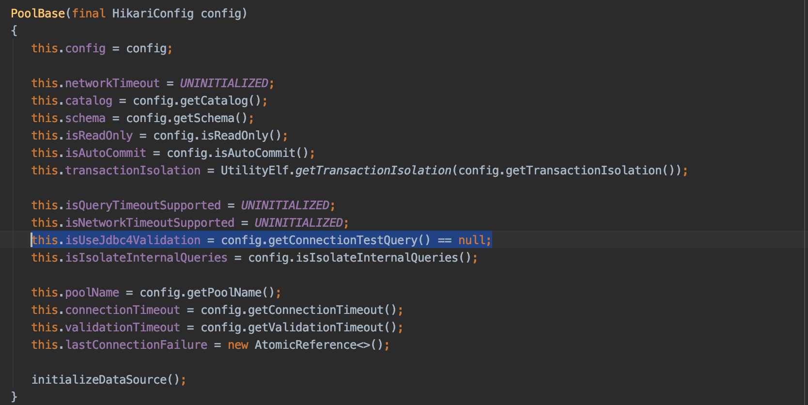

hikari-pool - Failed to validate connection
Springboot2.x를 사용하다 보면 이런 warn level 에러를 마주칠 수 있습니다.
1 | hikari-pool - Failed to validate connection com.mysql.cj.jdbc.ConnectionImpl@1e2db70 |
로그의 내용을 의역하면 아래와 같습니다.
- Hikari pool의 connection을 validate하는데 실패 했다.
- 이미 close된 connection에 어떤 operation을 하는것은 안된다.
- HikariPool의
maxLifetime값을 짧게 하는 것을 생각해봐라
무슨말 일까요?
요약하자면, connection을 갱신하고자 하는데 이미 닫힌 커넥션이라 어떤 행위도 할 수 없다. 입니다.
여기서 중요한건 HikariConfig의 MaxLifetime과 MySQL의 wait_timeout의 상관관계를 알아야 합니다.
Hikari Pool의 MaxLifetime
1 | This property controls the maximum lifetime of a connection in the pool. |
구글번역기로 대충 돌려보면..
- MaxLifetime은 Hikari pool에서 Connection이 살아 있을 수 있는 시간
- 현재 사용중인 Connection은 종료하지 않고 이미 닫혀 있는 경우에만 제거
- Connection을 한번에 대량으로 종료하고 생성하면 비용이 많이 듬 (실제로 2.5%의 유격으로 maxLifetime이 Connection에 설정됨)
- Database에 설정된 Connection time limit 보다 짧아야 한다.
- 0으로 설정하면 무한으로 Connection이 살아있음
- default 180000ms (= 30분)
Hikari Pool 내부적으로 Connection의 life time을 관리하는 속성입니다.
maxLifetime은 최소 30초 이상으로 설정하여야 합니다. (안그러면 180000ms로 설정)

MySQL의 wait_timeout
- wait_timeout: 활동하지 않는 커넥션을 끊을때까지 서버가 대기하는 시간
현재 아무것도 안하고 sleep 상태인 Connection을 끊는 주기입니다.
주의!
wait_timeout은 session, global variable 두 개로 구성되어있습니다.
- show variables like ‘wait_timeout’; : 현재 연결된 session에 대한 wait_timeout 값
- show global variables like ‘wait_timeout’: global wait_timeout값
활동하지 않는 커넥션을 종료하는 것은 mysql daemon에서 해주기 때문에 global wait_timeout 값에 의해 종료됩니다.
1 | show processlist; |
위의 명령어는 현재 mysql에서 동작중인 process (= connection) 정보입니다.

Time 필드의 값이 Sleep Command가 실행되고 경과된 시간입니다.
Time 필드의 값이 설정된 global wait_timeout 시간이 지나면 Connection을 종료하게 됩니다.
Hikari Pool에서 Connection을 관리하는 방법
JDBC4를 지원하는 드라이버에서는 예전처럼 더이상 validationQuery 를 수행하여 Connection을 갱신하지 않습니다.
이제는 Connection이 생성될 때 Hikari PoolEntry에 Scheduled Event를 걸어 maxLifetime 시간 이후에 강제적으로 Connection을 종료하도록 되어있습니다.

maxLifeTime에 2.5%의 변화를 주어 모든 Connection이 한순간에 종료되지 않도록 설정하였습니다.


softEvict Connection. 말 그대로 status만 변경하여 evict connection을 수행합니다.

위에서 변경한 Connection의 상태에 따라 진짜로 connection을 close 할지 말지 결정합니다.
(STATE_RESERVED 상태인 PoolEntry에 대한 Connection을 제거 합니다.)

진짜 validationQuery는 필요없어졌나?
기존에는 validationQuery, ConnectionTestQuery = SELECT 1등, test-idle-while 같은 기능을 구현하기 위해 또는
Connection의 갱신, validation을 하기 위해 의미 없는 Query를 실행하여, DB에 부하를 계속 주고 있었습니다.
하지만 JDBC4를 구현한 driver에서는 더 이상 validationQuery, ConnectionTestQuery를 사용하지 않도록 권장합니다.
(지금도 Hikari CP에는 기능은 있으나 코드가 실행안됨)
Connection Pool에서 한 개의 Connection을 받아 사용하기 전에 isConnectionAlive 라는 메서드가 실행됩니다.
(내가 지금 받은 커넥션이 유효한가? 에 대한 검사입니다.)

위의 코드를 보면 Jdbc4Validation을 사용하는 경우에는 Connection.isValid 메서드를 통해 현재 커넥션이 유효한지 검사합니다.
하지만, Jdbc4Validation을 사용하지 않는 경우에는 직접 ConnectionTestQuery를 실행하여 현재 커넥션에 대한 유효성을 판단합니다.

HikariPool 설정에서는 ConnectionTestQuery property가 null인 경우 Jdbc4Validation으로 동작합니다.
그래서 Failed to validate connection 로그는 왜 나오나요
저의 경우에는
mysql의 global wait_timeout 값이 60초로 설정되어 있었습니다.
Hikari Pool의 maxLifetime 값은 default로 180000ms (= 30분) 으로 되어져 있었습니다 .
따라서 30분마다 PoolEntry에서 놀고 있는 Connection을 종료하고자 하였지만, 이미 MySQL process는 종료되었기에
이미 닫힌 커넥션에 왜 무언가를 하려고하는가? 라고 warning log가 발생하였습니다.
catch 절에서 Exception이 발생하여 해당 로그가 찍히게 됩니다.
maxLifetime, wait_timeout 어떻게 설정해야 하나요?
1 | We strongly recommend setting this value, and it should be at least 30 seconds less than any |
Hikari CP에서는 maxLifetime을 MySQL의 wait_timeout보다 최소 30초 이상 적게 주도록 권장하고 있습니다.
(하지만 이는 잘못되었다고 합니다. pkgonan님 질문 참고)
pkgonan님이 받으신 답변을 참고하면
답변 요약
- max_lifetime을 Database의 wait_timeout보다 30초 이상 짧게 주라는 것은 잘못 되었다.
공식 문서 업데이트를 진행하지 않은 것이다. - HikariCP는 DBA를 존중하기 때문에 DBA가 설정한 wait_timeout을 지킨다.
- HikariCP는 커넥션 풀을 관리하기 위해 HouseKeeper라는 Thread가 30초마다 돌고 있다.
- HouseKeeper가 30초마다 돌며 커넥션을 종료하였기에, 이전 29.xx초까지의 커넥션들에 대해 유효성 체크가 누락될 수 있어서 30초의 여유를 준 것이다.
- 현재 방식은, ThreadLocal에서 각각 타이머를 통해 max-lifetime에 도달했는지 체크를 하는 방식으로 변경되었다.
따라서, max-lifetime은 네트워크 통신 등을 감안해서 Database의 wait_timeout으로 부터 2~3초 정도 짧게 주면 된다.커넥션이 사용중일 경우 즉시 종료를 하지 않기에 커넥션이 매우 바쁜 상황을 감안해서 여유있게 준다면 wait_timeout으로 부터 5초정도까지 짧게 주면 된다는 개발자의 추가 답변.
결론적으로
maxLifetime = wait_timeout - (2~5초) 정도로 설정하면 됩니다.
결과
저의 경우에는 maxLifetime의 Default를 더 존중하여 30분을 유지하도록 하고
MySQL의 global wait_timeout 값을 1830초 정도로(그냥 넉넉하게) 수정하여 사용하도록 변경하였습니다.
(maxLifetime을 바꾸자니 너무 잦은 커넥션 생성 비용이 염려스러웠습니다.)
이렇게 설정하고 나니 더 이상 Failed to validate connection WARN 로그는 발생하지 않았습니다.